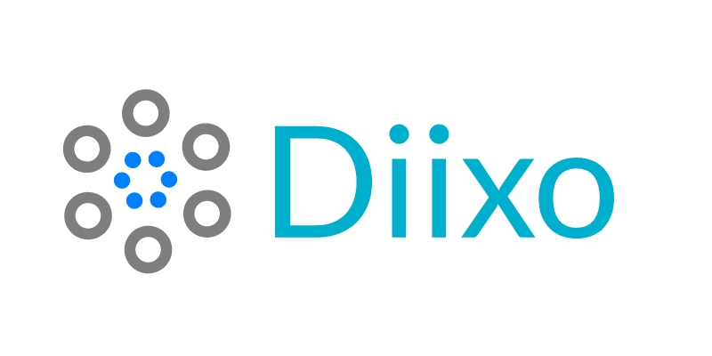

Diixo create web-channel from your site, included sub-pages by depth-level
You can create individual channel based on your domain, with indexing of sub-pages and updating content in real-time mode. Boost-Up your Domain & Get Top Of Search ranking.

Diixo Solve Your Promotion Problem
Search engines is constantly looking to improve their service by refining search algorithms and formulas. One of the ways that they do this is by created Channels to test search engines by looking up specific tags as they look at the tags and keywords that are returned and examine the results. The searcher then evaluate the results and report back with suggestions and improvements
We are full service which means we have got you covered on marketing and content right through to digital. You will form a lasting relationship with us, collaboration is central to everything we do.
We offer unlimited solutions to all your site-promotion needs. In the created Channel we propose and prepare search engine optimization, social media support, we provide corporate identity and graphic design services.
How Diixo-algorithm analyse BigData for the search
Every business wants to dominate its competition in Google search rankings, but doing so might be even more important for small businesses. LocalVox looked at research from Think With Google and found that four out of five consumers use search engines to find information about local products and services.
Findings like these are likely why Small Business Computing considers the continued importance of local search rankings to be one of the biggest SEO trends for small businesses this year. As you can see, winning the local SEO game is a key part of your mobile marketing strategies, which are massively important to your overall marketing efforts these days.
“Small businesses definitely want to focus on dominating local search queries. Much more attention will be given to local directories and citations.”: Jared Banz, founder of Banz Marketing Services, told Small Business Computing.
We know it’s critical to rank highly, if not at the top, of local search rankings, so here’s how you can beat out the local competition in the quest for that top spot.
Make sure you’re actually considered a local business
Before you get started, you should make sure that your business is actually a local one. As LocalVox pointed out, if you’re an online-only business, you won’t qualify as technically being local. Only small businesses with a storefront or the right to service a particular local area count.
In addition, you need to have what is known as a local identity. This means an address to a physical location and not just a P.O. Box, as well as a local phone number.
Claim your place in various online listings
Local online directories are a key way for consumers to quickly look up the information of small businesses in their areas. These directories almost always rank highly in search queries, so it’s well worth taking the time to make sure you’re is listed in the most popular ones. This can make up for any deficiencies your business’s website has in terms of its own rankings.
LocalVox wrote that there are at least five online directories you should be listed in if you want to have local SEO success: Google Places, Bing Places, Yahoo! Local Listing, Yelp and Manta. By claiming your listing in all of these directories, you are almost guaranteed to get visibility when people use those search engines.
If you only pick one, however, go with Google Places. This one is a no-brainer. Google is the most popular search engine in the world, and by getting listed here, you’ll be the beneficiary of all that traffic. Be sure to include your business’s name, description, images, hours and contact information in your Google Places page.
Be consistent
Once you get going, your business is going to be in a lot of places across the Web – directories, social profiles, affiliate websites, etc. Thus, it’s important to make sure that the information you’re putting out is consistent across channels. Always make sure that you present your information the same way, no matter where it goes. At the very least, make sure the basics are there – name, address and phone number.
Optimize your website for mobile
Think With Google also found that mobile is quickly becoming a main source of local search volume. Here are some of the numbers supporting that:
65 percent of consumers used their mobile devices to find small business information while they were already out.
60 percent of consumers who looked up a small business with their smart-phones visited the store within 24 hours.
According to Small Business Computing, Google is taking mobile responsiveness very seriously, and if your website isn’t optimized for mobile users, your search ranking will take a hit.
Use tags as targeted keywords
Everyone knows that generic keywords aren’t all that great when it comes to helping your target audience find you. This is even more so here. People often get very specific when they search for local businesses, so you need to make sure your social profiles and website are equipped with specific keywords.
For example, if you were running a burger joint, you wouldn’t use “burgers” as a keyword. You would use “burgers in downtown Boston.” Local searchers want local results, and don’t be afraid to be descriptive. If you’re too generic, they’ll never be able to find you amid all of the businesses that have narrowed down their keywords.
Build up your off-site presence
Building up links is still a great way to boost your search rankings. By having credible, well-ranked web pages link to your social profiles or website, you can climb the ladder relatively quickly. But there’s no clear-cut way to do this other than to give others a reason to link to you.
Reach out to local charities or nonprofits and see how you can donate or lend a hand – you’ll get your name out there in relation to a good cause, and they’ll probably link to you or share your information on their own Web properties. Or you can host your own event, which will draw crowds and maybe even the press. Don’t get impatient with this – link building is a long game and must be done right, or else you risk coming off as greedy.
Keep the content flowing, and optimize your old stuff
Having a solid flow of fresh content is a great way to boost your search rankings. But it doesn’t just have to be blog posts – make sure you’re staying active on social media too. (Don’t forget the keywords!)
Make sure to go back and optimize your existing content as well. Google is increasingly taking metrics like click-through rates and bounce rates into consideration when it does its ranking. If you’re not keeping customers on your page, you could be harming your position without even knowing it.
What are some ways you’ve boosted your local search rankings?
Start with a clear goal and a great idea
The goal of an outreach campaign is to raise awareness of something that has value for a specific audience. This could mean building links to a specific piece of content, a business’s website as a whole or just overall brand awareness. Then, you’ve got to deliver value through your content – enough to make sharing it irresistible.
Once you have a goal, you need an idea for your content. Will it be an infographic, video, whitepaper or another type of content? Will it be something bigger like a cause or an event? Know what you want to do and figure out what will make a publisher, influencer or an individual fan want to see it and share it with their own audiences.
Build genuine relationships before you need them
If you’re planning on creating high-value content, you’ll want to know that it can hit the ground running once it makes its way on to social media. But if you wait until the last minute to ask others to share your content, you’re likely to get rebuffed.
Link building and SEO are important, but what’s more so is having content that people want to experience and share on their own terms.
Channel creation is important sharing IT-knowledge
Find a way in which you can be an asset to the publishers or influencers in your vertical and add value to what they’re already doing. Once you’ve built a relationship, then you can start reaching out and asking them to promote and share your content on their channels. In fact, if you focus on the relationship, and the quality of your content is good, in many instances you won’t even need to ask. It will happen naturally.
Remember that while Facebook is still the king of the social sharing world, you shouldn’t neglect the second or third most popular channels in your vertical. In fact, if you’re a B2B, and not wanting to “pay to play” you may want to start with social platforms other than Facebook. For example, Buffer found that in the business space, LinkedIn earned 45 percent of the shares among high-engagement publications. That’s not a negligible amount of interaction!
Find the platforms your potential partners and audiences use
Imperative you know what platforms get the most traction for publishers and other content creators in your space. What types of content get a lot of shares? Who are the thought leaders and influencers things revolve around? Find out what brands or personalities in your vertical get their content shared the most and focus on them as someone you can build a relationship with. Further, you’ll find that each channel is better suited to certain types of content. You can help your outreach strategy a lot just by making sure your content is in a format conducive to sharing.
Understand the sharing habits of your space
Sharing habits differ for each vertical. Some see a flurry of activity during the morning and are flat at the end of the day. Others see their sharing peak on different days. Find out when your space is most active and, if you’ve built relationships with others who will share your content, don’t be afraid to ask (just don’t make it a habit) if they can post it during that time to maximize its reach. Don’t do this for every piece of content, but if you have a “big rock” or great, (inspiring, life-changing) piece of content, it’s okay to ask.
Channels with corresponded tags and keywords
The look beyond particular influencers to see what keywords and hashtags you can use to promote and amplify your content. These are a great way to tie your campaign into existing trends and search habits of the audience you’re trying to reach. By using the strong keywords and hashtags, you’ll not only boost your own shares, but those of the people and brands doing the sharing. This ties back into the relationship part of the strategy – how can you find a way in which everyone involved benefits from all the activity? It’s equally just as much about the relationships as it is the content itself.
What is Diixo search algorithm?
Essence of search algorithm is a unique formula that a search engine uses to retrieve specific information stored within a data structure and determine the significance of a web page and its content. Search algorithms are unique to their search engine and determine search engine result rankings of web pages.
Search engines use specific algorithms based on their data size and structure to produce a return value.
- Common Types of Search Algorithms
- Linear Search Algorithm
- Binary Search Algorithm
How Search Diixo-Algorithms Impact Search Engine Optimization
Search algorithms help determine the ranking of a web page at the end of the search when the results are listed.
Each search engine uses a specific set of rules to help determine if a web page is real or spam and if the content and data within the page is going to be of interest to the user. The results of this process ultimately determine a site’s ranking on the search engine results page.
While each set of rules and algorithm formulas vary, search engines use relevancy, individual factors and off-page factors to determine page ranking in search results.
Relevancy
Search engines search through web page content and text looking for keywords and their location on the website. If keywords are found in the title of the page, headline and first couple of sentences on the page of a site, then that page will rank better for that keyword than other sites. Search engines can scan to see how keywords are used in the text of a page and will determine if the page is relevant to what you’re searching for. The frequency of the keywords you’re searching for will affect the relevancy of asite. If keywords are stuffed into a site’s text and it doesn’t naturally flow, search engines will flag this as keyword stuffing. Keyword stuffing reduces a site’s relevancy and hurts the page’s ranking in search engine results.
Individual Factors
Since search algorithms are specific to search engines, individual factors come from each search engine’s ability to use their own set of rules for search algorithm application. Search engines have different sets of rules for how they search and crawl through sites; for adding a penalty to sites for keyword spamming; and for how many sites they index. As a result, if you search for “home decor” on Google and then again on Bing, you will see two different pages of results. Google indexes more pages than Bing - and more frequently - and, as a result, will show a different set of results for search inquiries.
Off-Page Factors
Off- page factors that help search engines determine a page’s rank include things like hyperlinking and click-through measurement. Click-through measurements can help a search engine determine how many people are visiting a site, if they immediately bounce off the site, how long they spend on a site and what they search for. Poor off-page factors can lower asite’s relevancy and SEO ranking so it’s important to consider these items and work to improve them if necessary.
Once you have a better understanding of how search algorithms work, their role in search engine optimization and site rankings then you can make the necessary adjustments to a site to improve its’ ranking. Our team of Search Engine Optimization (SEO) specialist can help you make adjustments and set up your site so that it is properly optimized for search engines. Contact us today and let us help you get started on your sites SEO!

Our Services
Create Channel from any IT-site (IT-domain)
You can register any web-site from IT-scope subject matter.
BigData processing with Page-rank calculation
Diixo contains of a research of a set with strategies and techniques related with algorithm's design, whose purpose is the resolution of problems on massive data sets, in an efficient way.
Automatization of income new pages monitoring
Automatization of income new pages monitoring.
Provides Searching mechanism
Data analysis is a process of inspecting, cleansing, transforming, and modeling data with the aim of discovering useful information
PageRank algorithm, fully explained
The PageRank algorithm or Google algorithm was introduced by Lary Page, one of the founders of Google. It was first used to rank web pages in the Google search engine. Nowadays, it is more and more used in many different fields, for example in ranking users in social media etc… What is fascinating with the PageRank algorithm is how to start from a complex problem and end up with a very simple solution.
Generating Structured Data from Unstructured Data
A lot of the focus of ML education is around supervised learning — predicting a value or classification — which is all well and good until you begin to work with real world data sets. Getting a hold of tabular data in a consistent format can take more time than the creation of your model. That is very apparent when working with text data, since a lot of text you may be interested in is created by people that do not care about quality or format. The rate that unstructured data is being generated is increasing at faster rate than structured data, so aligning textual data with a consistency is a useful skill.
High-quality search operations
Linear Search Algorithm in Diixo-project
To find what is being searched for, the algorithm looks at the items as a list. Once it gets to the item being searched, the search is finished.
Binary Search Algorithm in Diixo-project
The algorithm starts in the middle of the list. If the target is lower than the middle point, then it eliminates the upper half of the list; if the target is higher than the middle point, then it cuts out the lower half of the list.
Pre-processing and Post-processing in binary search
Binary search algorithms are made up of three main sections to determine which half of the lists to eliminate and how to scan through the remainder of the list. Pre-Processing will sort the collection if it is not already in order. Binary Search uses a loop or recursion to divide the search space in half after making a comparison. Post-Processing determines which variable candidates remain in the search space.
Search algorithms and tensorflow_xla under the hood
Tensorflow_xla provide the building of tags cloud. Indexation progress can take hours to weeks for new content to be indexed.
Diixo tracks indexing progress of sub-pages your website.
Indexing is not equal ranking. Typical search-system does not ensure You can be indexed and at the same time your indexed pages won’t necessarily rank. The forcing content to be indexed does not mean that page will be shown prominently in search-result.
Without guarantee to be indexed.
There is also no guarantee that Google will index your content or all the content on the web. In fact, Google does not index a lot of content on the internet, no search engine does.
Ads Keywords Operators: matching types
It is very difficult to attract organic traffic. A small leather repair shop simply cannot compete with a huge holding company that has both SEO specialists and development managers on the staff. In order to eliminate this blatant injustice, search advertising exists.
Today we are talking about Keyword-Ads, namely the mastery of working with key queries. Competent ad compilation and selection of the necessary keywords are factors that affect such important parameters of Google Ads as the rating of the ad quality and cost per click. That is, for the most important components of your future advertising campaign, so be sure to read our material to the end, and your ads will become more effective!
- Wide match type
- Broad match modifier
- Phrasal match type
- Exact match type
Prioritize Keywords after combination research with Diixo
How high in the top an ad appears among other advertisers will depend on how much the customer is willing to spend on their campaign. The higher the costs and the more relevant the query, the higher the ranking will become. That is why we will pay special attention to working with requests. And we’ve covered in detail what else ad rank is about.
Keyword research is the process of using tools and data to determine which words are most likely to drive relevant traffic to your website. This is exactly the tool that Google Ads operators are, each of which we will analyze below.
The first match type is broad match, set by Google Adwords by default, and the rest are achieved through the use of operators. Now let's talk a little more about each of the matching types.